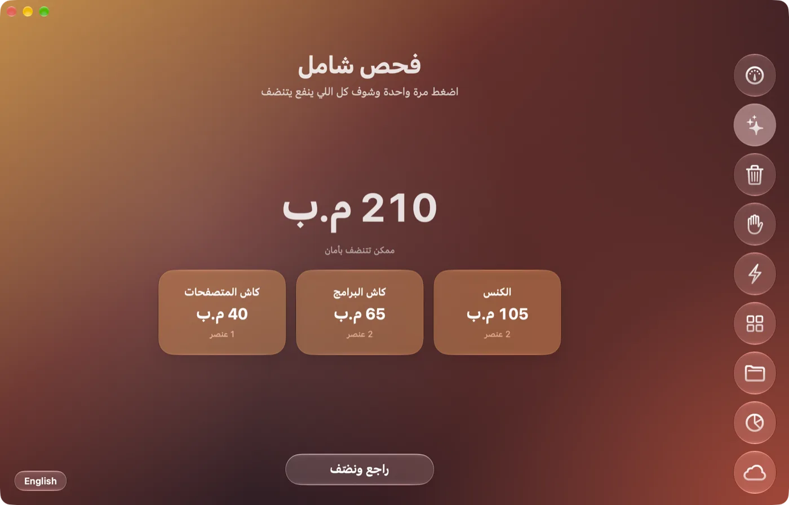
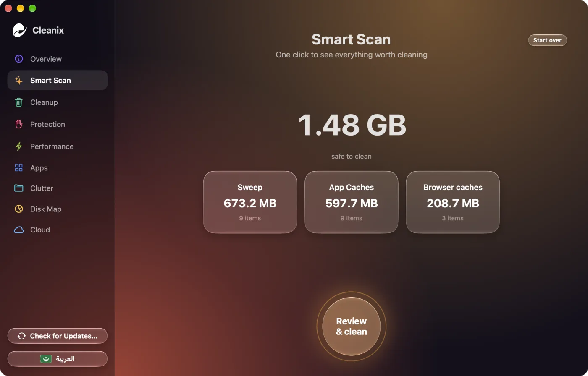
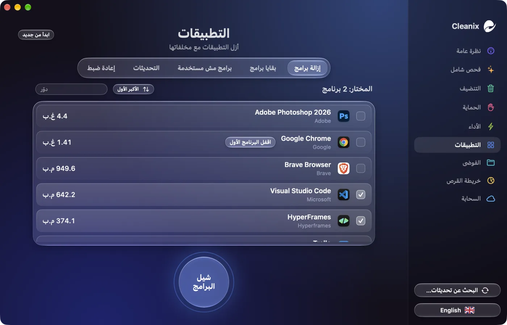
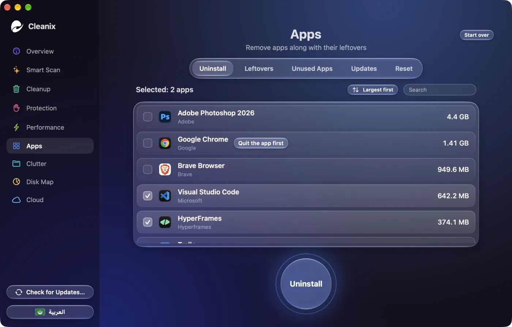
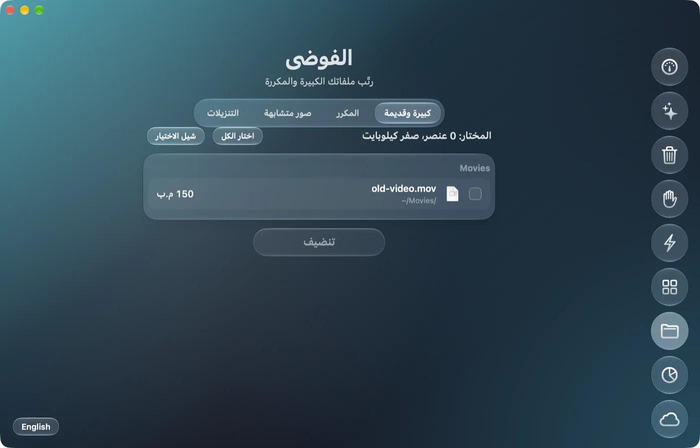
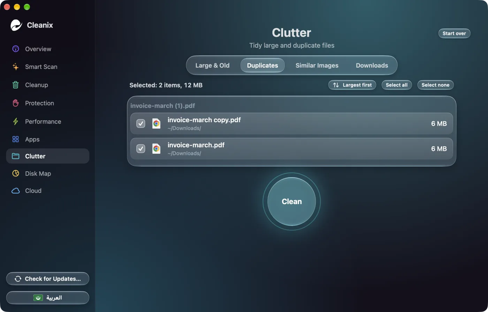
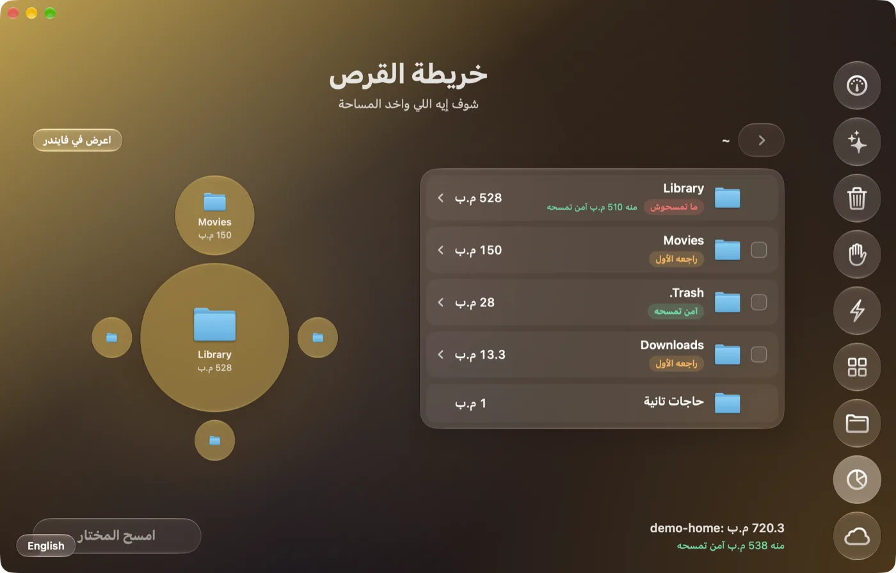
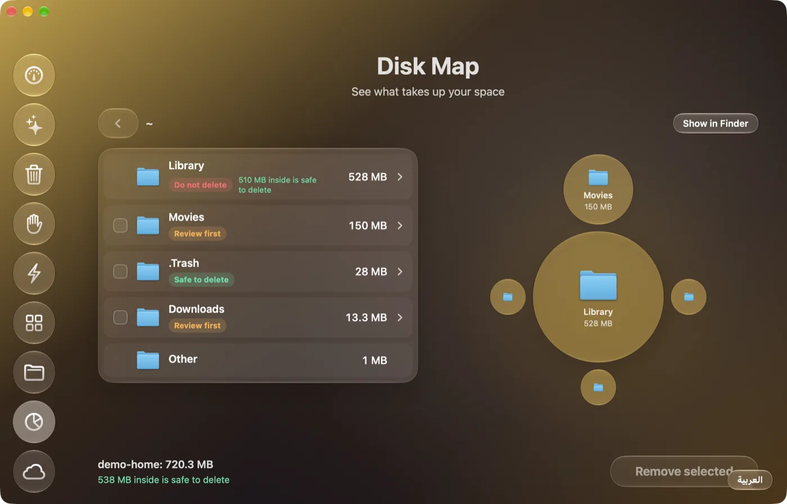

جهازك مليان كراكيب.Your computer is full of junk. اتنضّف.Clean.
0 ملف اتشفطfiles swept
انزل لتحت ونضّفScroll to clean it
برنامج تنظيف مجاني ومفتوح المصدر، بالعربي والإنجليزي. A free, open-source cleaner, in Arabic and English.
01
ضغطة واحدة. كل الكراكيب.One click. All the junk.
الفحص الشامل بيدوّر على ملفات النظام وكاش البرامج والمتصفحات مرة واحدة، ويوريك قد إيه ممكن يتنضف بأمان.Smart Scan checks system junk, app caches and browser caches at once, and tells you how much is safe to clean.


02
شيل البرنامج، وبقاياه معاه.Remove the app, and what it left.
لما تمسح برنامج بالسحب للسلة بيفضل وراه كاش وإعدادات. Cleanix بيلاقيها ويشيلها معاه، ويوريك البرامج اللي مابتفتحهاش.Dragging an app to the Trash leaves caches and settings behind. Cleanix finds them and removes them too, and shows the apps you never open.


03
خمس نسخ؟ خليها واحدة.Five copies? Keep one.
الملفات الكبيرة والقديمة، المكرر، الصور المتشابهة، والتنزيلات اللي نسيتها. كله في مكان واحد وانت اللي بتختار.Large and old files, duplicates, similar photos and forgotten downloads. All in one place, and you choose.


04
شوف مين واكل المساحة.See what ate your disk.
خريطة القرص بتوريك كل فولدر وحجمه، ومتعلّم عليه: آمن تمسحه، راجعه الأول، أو ما تقربش.Disk Map shows every folder and its size, marked safe to delete, review first, or do not touch.


وكمانAnd also
- الخصوصيةPrivacyامسح بيانات المتصفحات.Clear browser data.
- الفرّامةShredderامسح ملف بحيث ما يرجعش.Erase a file for good.
- الأداءPerformanceصيانة وبرامج بدء التشغيل.Maintenance and login items.
- السحابةCloudفضّي نسخ iCloud المحلية.Free local iCloud copies.
- المرفقاتMail attachmentsمرفقات البريد اللي اتنزلت.Downloaded mail attachments.
- تحديثات لوحدهاAuto updatesموقّعة، وبيسألك الأول.Signed, and it asks first.
ولا حاجة بتتمسح من غير ما تشوفها.Nothing goes without you seeing it.
قبل أي تنضيف بتشوف لستة بكل ملف. اللي بيتنضف بيروح الحجر الصحي 30 يوم، وتقدر ترجّعه بزرار. والمسح بيعدي على لستة فولدرات مسموح بيها بس.Before any clean-up you see a list of every file. Cleaned items go to quarantine for 30 days and come back with one button. And deletion only ever touches an allowlist of folders.
نضّف جهازك النهارده.Clean your computer today.
- افتح ملف التسطيبOpen the installer لو الماك قال إنه مش متأكد من المطوّر، دوس Done، وروح System Settings ← Privacy & Security ← Open Anyway.If macOS can't verify the developer, click Done, then System Settings → Privacy & Security → Open Anyway.
- كمّل خطوات التسطيبFollow the installer Continue ثم Install. البرنامج بيتحط في Applications، ولو فيه نسخة قديمة بتتبدّل.Continue, then Install. Cleanix goes to Applications and replaces any older copy.
- اديله Full Disk AccessGive it Full Disk Access البرنامج بيوريك زرار يفتحلك الصفحة الصح.The app shows a button that opens the right page.
- وخلاصThat's it التحديثات بتوصل لوحدها وبيسألك قبل ما يسطّب.Updates arrive on their own, and it asks before installing.